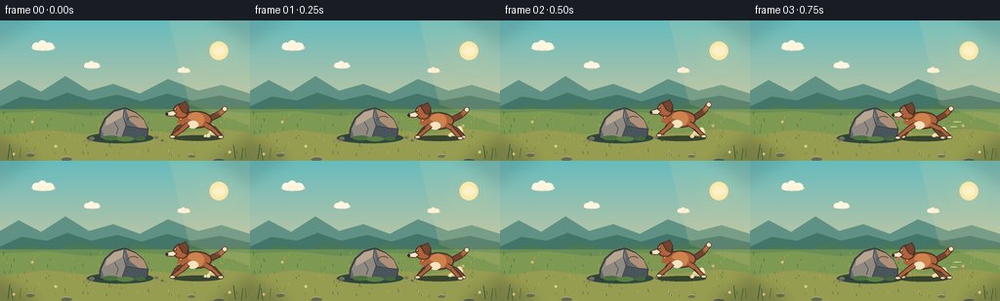
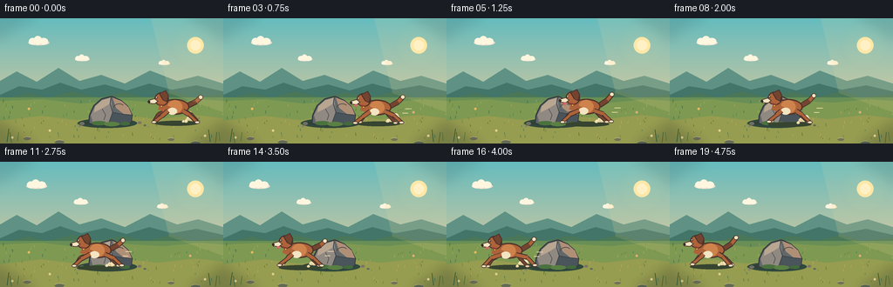
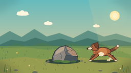
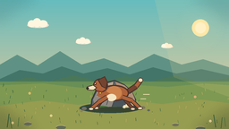
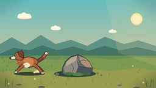

CODING AGENTS AS PIXEL WORLD MODELS
traex/DeepSeek-V4.1-Flash · dynamic_spatial_relationship_0004
点击播放 · 原生 RGB 像素
逐轮保存的候选
回放视频、检查图与代码变化。
每份候选均可单独播放。实际图片检查记录在下方工具轨迹中。
候选 01播放与检查图
点击播放 · 原生 RGB 像素


展开代码变化
--- 上一保存版本
+++ 本次保存版本
@@ -0,0 +1,366 @@
+"""Generate a short, hand-drawn RGB animation from the text prompt."""
+
+from __future__ import annotations
+
+import math
+from pathlib import Path
+
+import numpy as np
+from PIL import Image, ImageDraw, ImageFilter
+
+from artifact_io import save
+
+
+WIDTH = 256
+HEIGHT = 144
+FRAMES = 20
+SCALE = 4
+W = WIDTH * SCALE
+H = HEIGHT * SCALE
+
+
+def sx(value: float) -> int:
+ return round(value * SCALE)
+
+
+def box(values: tuple[float, float, float, float]) -> tuple[int, int, int, int]:
+ return tuple(sx(value) for value in values)
+
+
+def points(values: list[tuple[float, float]]) -> list[tuple[int, int]]:
+ return [(sx(x), sx(y)) for x, y in values]
+
+
+def rgba(color: tuple[int, int, int], alpha: int = 255) -> tuple[int, int, int, int]:
+ return (*color, alpha)
+
+
+def vertical_gradient(top: tuple[int, int, int], bottom: tuple[int, int, int]) -> Image.Image:
+ y = np.linspace(0.0, 1.0, H, dtype=np.float32)[:, None, None]
+ top_arr = np.asarray(top, dtype=np.float32)[None, None, :]
+ bottom_arr = np.asarray(bottom, dtype=np.float32)[None, None, :]
+ pixels = top_arr * (1.0 - y) + bottom_arr * y
+ pixels = np.repeat(pixels, W, axis=1).astype(np.uint8)
+ return Image.fromarray(pixels, "RGB").convert("RGBA")
+
+
+def add_soft_glow(image: Image.Image, center: tuple[float, float], radius: float, color: tuple[int, int, int]) -> None:
+ glow = Image.new("RGBA", image.size, (0, 0, 0, 0))
+ gd = ImageDraw.Draw(glow)
+ cx, cy = sx(center[0]), sx(center[1])
+ r = sx(radius)
+ for step in range(8, 0, -1):
+ rr = round(r * step / 8)
+ alpha = round(18 * (1.0 - step / 10.0))
+ gd.ellipse((cx - rr, cy - rr, cx + rr, cy + rr), fill=rgba(color, alpha))
+ glow = glow.filter(ImageFilter.GaussianBlur(sx(2.2)))
+ image.alpha_composite(glow)
+
+
+def draw_cloud(draw: ImageDraw.ImageDraw, x: float, y: float, scale: float, alpha: int = 180) -> None:
+ cream = rgba((255, 246, 224), alpha)
+ shade = rgba((236, 222, 204), alpha)
+ draw.ellipse(box((x - 15 * scale, y - 4 * scale, x + 16 * scale, y + 4 * scale)), fill=shade)
+ draw.ellipse(box((x - 14 * scale, y - 7 * scale, x - 3 * scale, y + 3 * scale)), fill=cream)
+ draw.ellipse(box((x - 7 * scale, y - 10 * scale, x + 5 * scale, y + 3 * scale)), fill=cream)
+ draw.ellipse(box((x + 1 * scale, y - 7 * scale, x + 14 * scale, y + 3 * scale)), fill=cream)
+
+
+def draw_background(frame_index: int) -> Image.Image:
+ image = vertical_gradient((102, 188, 190), (249, 203, 146))
+ draw = ImageDraw.Draw(image, "RGBA")
+
+ # Warm sun and atmospheric bands.
+ add_soft_glow(image, (224, 31), 27, (255, 225, 152))
+ draw = ImageDraw.Draw(image, "RGBA")
+ draw.ellipse(box((214.5, 21.5, 233.5, 40.5)), fill=rgba((255, 232, 169), 220))
+ draw.ellipse(box((218, 25, 230, 37)), fill=rgba((255, 244, 203), 230))
+
+ cloud_shift = frame_index * 0.22
+ draw_cloud(draw, 44 - cloud_shift, 28, 0.78, 150)
+ draw_cloud(draw, 94 - cloud_shift * 0.65, 47, 0.55, 118)
+ draw_cloud(draw, 188 - cloud_shift * 0.8, 52, 0.42, 96)
+
+ # Layered hills give depth without competing with the rock.
+ draw.polygon(
+ points([(0, 82), (0, 72), (19, 61), (42, 73), (67, 57), (91, 72), (116, 65),
+ (143, 75), (172, 60), (203, 72), (227, 66), (256, 75), (256, 91), (0, 91)]),
+ fill=rgba((95, 146, 132), 170),
+ )
+ draw.polygon(
+ points([(0, 88), (22, 78), (48, 82), (69, 74), (93, 82), (120, 76), (145, 83),
+ (171, 75), (197, 82), (225, 77), (256, 84), (256, 101), (0, 101)]),
+ fill=rgba((67, 117, 105), 205),
+ )
+ draw.polygon(
+ points([(0, 94), (32, 86), (55, 91), (82, 84), (112, 91), (141, 85), (168, 91),
+ (196, 84), (221, 91), (256, 87), (256, 108), (0, 108)]),
+ fill=rgba((74, 119, 88), 235),
+ )
+
+ # Meadow, with a soft horizon edge and a few bands of light.
+ draw.rectangle(box((0, 91, 256, 144)), fill=rgba((105, 143, 86), 255))
+ draw.polygon(
+ points([(0, 95), (48, 93), (92, 98), (139, 94), (187, 97), (228, 93), (256, 95),
+ (256, 144), (0, 144)]),
+ fill=rgba((126, 153, 82), 210),
+ )
+ draw.polygon(
+ points([(0, 118), (47, 112), (88, 117), (130, 110), (181, 116), (224, 111), (256, 115),
+ (256, 144), (0, 144)]),
+ fill=rgba((150, 156, 80), 115),
+ )
+
+ # Sparse foreground texture.
+ rng = np.random.default_rng(4817)
+ for _ in range(105):
+ x = float(rng.uniform(1, 255))
+ y = float(rng.uniform(94, 143))
+ length = float(rng.uniform(1.0, 3.4))
+ tone = int(rng.integers(0, 3))
+ color = [(55, 101, 64, 130), (91, 125, 61, 150), (190, 174, 98, 100)][tone]
+ draw.line((sx(x), sx(y), sx(x + rng.uniform(-0.8, 0.8)), sx(y - length)), fill=color, width=sx(0.45))
+ for x, y, color in [
+ (33, 104, (246, 196, 101)), (57, 129, (239, 221, 151)), (218, 108, (243, 179, 129)),
+ (235, 135, (250, 224, 174)), (14, 137, (239, 218, 150)),
+ ]:
+ draw.ellipse(box((x - 1.2, y - 1.2, x + 1.2, y + 1.2)), fill=rgba(color, 220))
+ draw.ellipse(box((x - 0.35, y - 0.35, x + 0.35, y + 0.35)), fill=rgba((116, 91, 55), 220))
+
+ return image
+
+
+def draw_rock(image: Image.Image) -> None:
+ draw = ImageDraw.Draw(image, "RGBA")
+
+ # The cast shadow points left, away from the late-afternoon sun.
+ draw.ellipse(box((89, 115, 157, 126)), fill=rgba((48, 73, 61), 78))
+ draw.ellipse(box((95, 117, 151, 124)), fill=rgba((45, 65, 57), 72))
+
+ outline = rgba((55, 61, 63), 255)
+ silhouette = [(101, 121), (102, 111), (107, 100), (116, 92), (128, 89),
+ (139, 94), (147, 101), (152, 111), (151, 119), (144, 123), (108, 123)]
+ draw.polygon(points(silhouette), fill=rgba((98, 104, 105), 255), outline=outline, width=sx(1.5))
+
+ draw.polygon(
+ points([(104, 111), (109, 101), (117, 94), (127, 91), (129, 108), (124, 122), (107, 121)]),
+ fill=rgba((144, 137, 130), 255),
+ )
+ draw.polygon(
+ points([(129, 91), (139, 95), (147, 102), (151, 111), (142, 110), (133, 103)]),
+ fill=rgba((176, 143, 119), 255),
+ )
+ draw.polygon(
+ points([(129, 108), (140, 110), (151, 111), (150, 119), (143, 123), (124, 122)]),
+ fill=rgba((74, 84, 91), 255),
+ )
+ draw.polygon(
+ points([(109, 101), (117, 94), (127, 91), (126, 98), (116, 104), (108, 108)]),
+ fill=rgba((185, 166, 145), 180),
+ )
+ draw.line(points([(127, 91), (126, 98), (129, 108), (124, 122)]), fill=rgba((67, 72, 76), 180), width=sx(1.1))
+ draw.line(points([(129, 108), (140, 110), (151, 111)]), fill=rgba((56, 65, 70), 170), width=sx(0.9))
+ draw.line(points([(117, 104), (121, 111), (119, 117)]), fill=rgba((70, 75, 76), 125), width=sx(0.75))
+ draw.arc(box((130, 98, 143, 108)), 185, 320, fill=rgba((61, 69, 72), 145), width=sx(0.8))
+
+ # Moss and pebbles anchor the rock in the meadow.
+ draw.ellipse(box((105, 118, 122, 123)), fill=rgba((74, 114, 62), 225))
+ draw.ellipse(box((119, 119, 137, 124)), fill=rgba((89, 128, 66), 210))
+ draw.ellipse(box((138, 119, 149, 123)), fill=rgba((67, 105, 60), 190))
+ for x, y, r, color in [
+ (94, 121, 2.8, (114, 111, 101)), (160, 120, 2.2, (126, 117, 102)),
+ (166, 123, 1.6, (96, 103, 91)), (91, 124, 1.4, (137, 128, 110)),
+ ]:
+ draw.ellipse(box((x - r, y - r * 0.65, x + r, y + r * 0.65)), fill=rgba(color, 235))
+
+
+def limb(draw: ImageDraw.ImageDraw, start: tuple[float, float], end: tuple[float, float],
+ color: tuple[int, int, int], width: float) -> None:
+ draw.line((sx(start[0]), sx(start[1]), sx(end[0]), sx(end[1])), fill=rgba((68, 48, 43), 255),
+ width=sx(width + 1.8))
+ draw.line((sx(start[0]), sx(start[1]), sx(end[0]), sx(end[1])), fill=rgba(color, 255),
+ width=sx(width))
+ r = width / 2
+ draw.ellipse(box((end[0] - r, end[1] - r, end[0] + r, end[1] + r)), fill=rgba(color, 255))
+
+
+def draw_dust(image: Image.Image, dog_x: float, baseline: float, phase: float) -> None:
+ draw = ImageDraw.Draw(image, "RGBA")
+ for index in range(4):
+ travel = ((phase * 2.8 + index * 1.55) % 6.2)
+ x = dog_x + 9 + travel * 2.0
+ y = baseline - 1.5 - travel * 0.8 + math.sin(index * 2.1) * 1.1
+ alpha = max(0, round(92 * (1.0 - travel / 6.4)))
+ radius = 1.5 + travel * 0.43
+ draw.ellipse(box((x - radius, y - radius * 0.7, x + radius, y + radius * 0.7)),
+ fill=rgba((224, 205, 157), alpha))
+ draw.ellipse(box((x - radius * 0.55, y - radius * 1.1, x + radius * 0.75, y + radius * 0.3)),
+ fill=rgba((244, 229, 185), alpha // 2))
+
+
+def draw_dog(image: Image.Image, x: float, baseline: float, frame_index: int) -> None:
+ phase = frame_index * 1.08
+ bob = 1.25 * math.sin(phase * 2.0)
+ y = baseline + bob
+ body_y = y - 18.5
+ hx = x - 15.5
+ hy = y - 27.5 + 0.7 * math.sin(phase * 2.0 + 0.6)
+ brown = (174, 99, 58)
+ brown_dark = (116, 68, 48)
+ brown_light = (206, 131, 76)
+ cream = (244, 228, 193)
+
+ draw = ImageDraw.Draw(image, "RGBA")
+ draw.ellipse(box((x - 24, baseline - 2.4, x + 26, baseline + 3.2)),
+ fill=rgba((55, 68, 48), 78))
+
+ draw_dust(image, x, baseline, phase)
+ draw = ImageDraw.Draw(image, "RGBA")
+
+ # Tail behind the body.
+ wag = 2.2 * math.sin(phase * 1.75 + 0.8)
+ tail_a = (x + 15, body_y - 1.8)
+ tail_b = (x + 24, body_y - 7.0 + wag * 0.45)
+ tail_c = (x + 29, body_y - 12.5 + wag)
+ limb(draw, tail_a, tail_b, brown_dark, 4.7)
+ limb(draw, tail_b, tail_c, brown, 3.9)
+ draw.ellipse(box((tail_c[0] - 2.7, tail_c[1] - 2.7, tail_c[0] + 2.7, tail_c[1] + 2.7)),
+ fill=rgba(cream, 255), outline=rgba((80, 57, 47), 255), width=sx(0.8))
+
+ # Far legs are darker and sit behind the torso.
+ far_legs = [
+ (-10.5, body_y + 5.0, -17.0, y - 8.0, -22.5, y - 1.0, -1.0),
+ (10.5, body_y + 5.0, 16.5, y - 7.0, 23.0, y - 1.0, 0.9),
+ ]
+ for hip_x, hip_y, knee_base_x, knee_base_y, paw_x, paw_y, offset in far_legs:
+ swing = math.sin(phase + offset)
+ knee_x = knee_base_x + swing * 3.4
+ knee_y = knee_base_y - abs(swing) * 2.2
+ foot_x = paw_x + swing * 3.0
+ foot_y = paw_y - max(0.0, swing) * 1.3
+ limb(draw, (x + hip_x, hip_y), (x + knee_x, knee_y), brown_dark, 3.2)
+ limb(draw, (x + knee_x, knee_y), (x + foot_x, foot_y), brown_dark, 2.5)
+ draw.ellipse(box((x + foot_x - 2.4, foot_y - 1.4, x + foot_x + 2.7, foot_y + 1.6)),
+ fill=rgba((230, 209, 174), 255), outline=rgba((80, 57, 47), 220), width=sx(0.55))
+
+ # Torso and neck.
+ draw.ellipse(box((x - 16.5, body_y - 9.0, x + 16.0, body_y + 9.0)),
+ fill=rgba(brown, 255), outline=rgba((79, 52, 43), 255), width=sx(1.5))
+ draw.ellipse(box((x - 9, body_y - 7.7, x + 8, body_y + 7.5)),
+ fill=rgba(brown_light, 105))
+ draw.polygon(points([(x - 17, body_y - 5), (x - 20, body_y + 3), (x - 10, body_y + 7),
+ (x - 4, body_y + 1)]), fill=rgba(brown, 255))
+ draw.ellipse(box((x - 9, body_y + 1, x + 2, body_y + 9)), fill=rgba(cream, 255))
+
+ # Head, muzzle, ear, and face.
+ draw.ellipse(box((hx - 8.5, hy - 8.0, hx + 8.0, hy + 7.6)),
+ fill=rgba(brown, 255), outline=rgba((75, 50, 43), 255), width=sx(1.3))
+ draw.polygon(
+ points([(hx - 3.5, hy - 6.5), (hx + 4.5, hy - 10.5), (hx + 8.0, hy - 4.0),
+ (hx + 6.0, hy + 3.5), (hx + 1.0, hy + 1.0)]),
+ fill=rgba(brown_dark, 255), outline=rgba((75, 50, 43), 255), width=sx(1.1),
+ )
+ draw.polygon(
+ points([(hx - 8.5, hy - 1.0), (hx - 15.5, hy + 1.0), (hx - 15.0, hy + 5.0),
+ (hx - 8.0, hy + 5.5), (hx - 4.0, hy + 2.2)]),
+ fill=rgba(cream, 255), outline=rgba((77, 55, 47), 255), width=sx(1.0),
+ )
+ draw.ellipse(box((hx - 16.3, hy + 1.7, hx - 13.3, hy + 4.2)), fill=rgba((49, 42, 39), 255))
+ draw.ellipse(box((hx - 7.3, hy - 3.1, hx - 5.1, hy - 0.8)), fill=rgba((50, 39, 35), 255))
+ draw.ellipse(box((hx - 6.8, hy - 2.8, hx - 5.8, hy - 1.7)), fill=rgba((255, 246, 213), 230))
+ draw.line(points([(hx - 14.0, hy + 4.7), (hx - 10.2, hy + 5.2)]),
+ fill=rgba((88, 49, 43), 220), width=sx(0.7))
+ if frame_index % 10 in (3, 4, 5, 6):
+ draw.ellipse(box((hx - 11.2, hy + 4.8, hx - 7.0, hy + 7.2)),
+ fill=rgba((219, 105, 112), 230))
+ draw.line(points([(hx - 9.8, hy + 6.8), (hx - 9.3, hy + 8.1)]),
+ fill=rgba((168, 70, 79), 180), width=sx(0.55))
+
+ # Collar and small brass tag.
+ draw.line(points([(hx - 4.0, hy + 5.8), (hx + 1.5, hy + 7.0)]),
+ fill=rgba((142, 61, 50), 255), width=sx(2.1))
+ draw.ellipse(box((hx - 1.8, hy + 7.0, hx + 0.7, hy + 9.5)),
+ fill=rgba((235, 181, 73), 255), outline=rgba((112, 75, 44), 220), width=sx(0.5))
+
+ # Near legs swing visibly against the body.
+ near_legs = [
+ (-8.5, body_y + 4.5, -16.0, y - 7.5, -25.0, y - 0.8, 0.1),
+ (8.5, body_y + 4.5, 17.0, y - 8.5, 26.0, y - 0.8, math.pi + 0.3),
+ ]
+ for hip_x, hip_y, knee_base_x, knee_base_y, paw_x, paw_y, offset in near_legs:
+ swing = math.sin(phase + offset)
+ knee_x = knee_base_x + swing * 4.0
+ knee_y = knee_base_y - abs(swing) * 2.8
+ foot_x = paw_x + swing * 3.8
+ foot_y = paw_y - max(0.0, swing) * 1.4
+ limb(draw, (x + hip_x, hip_y), (x + knee_x, knee_y), brown, 3.9)
+ limb(draw, (x + knee_x, knee_y), (x + foot_x, foot_y), brown, 3.0)
+ draw.ellipse(box((x + foot_x - 2.8, foot_y - 1.7, x + foot_x + 3.2, foot_y + 1.8)),
+ fill=rgba(cream, 255), outline=rgba((76, 53, 45), 255), width=sx(0.7))
+
+ # A couple of tiny speed ticks make the direction unmistakable.
+ if frame_index in range(3, 17):
+ fade = 80 if frame_index < 7 or frame_index > 13 else 125
+ draw.line(points([(x + 32, y - 17), (x + 39, y - 17)]), fill=rgba((244, 226, 180), fade), width=sx(0.8))
+ draw.line(points([(x + 29, y - 12), (x + 35, y - 12)]), fill=rgba((244, 226, 180), fade), width=sx(0.65))
+
+
+def draw_foreground(image: Image.Image, frame_index: int) -> None:
+ draw = ImageDraw.Draw(image, "RGBA")
+ sway = math.sin(frame_index * 0.58) * 0.6
+
+ # Tall blades at the edges frame the action.
+ for x, y, height, lean, color in [
+ (8, 142, 15, 2.1, (44, 88, 54)), (13, 143, 12, -1.8, (67, 106, 57)),
+ (20, 141, 10, 1.2, (82, 117, 58)), (241, 142, 14, -2.0, (45, 88, 54)),
+ (247, 143, 12, 1.5, (66, 108, 55)), (252, 141, 10, -1.0, (86, 121, 61)),
+ ]:
+ draw.line(points([(x, y), (x + lean + sway * 0.35, y - height)]),
+ fill=rgba(color, 230), width=sx(0.8))
+
+ # Small foreground stones remain below the dog and rock.
+ for x, y, rx, ry, color in [
+ (31, 138, 4.2, 2.0, (104, 111, 89)), (68, 142, 5.5, 2.3, (98, 108, 84)),
+ (196, 139, 3.8, 1.7, (113, 113, 88)), (224, 143, 5.2, 2.0, (90, 104, 82)),
+ ]:
+ draw.ellipse(box((x - rx, y - ry, x + rx, y + ry)), fill=rgba(color, 200))
+ draw.arc(box((x - rx, y - ry, x + rx, y + ry)), 195, 330,
+ fill=rgba((206, 189, 137), 85), width=sx(0.55))
+
+
+def render_frame(frame_index: int) -> np.ndarray:
+ image = draw_background(frame_index)
+ draw_rock(image)
+
+ # The path remains fully separated from the rock in the first and last frames.
+ progress = frame_index / (FRAMES - 1)
+ dog_x = 201.0 + (47.0 - 201.0) * progress
+ baseline = 120.2 + 1.4 * math.sin(progress * math.pi)
+ draw_dog(image, dog_x, baseline, frame_index)
+ draw_foreground(image, frame_index)
+
+ # Fine warm light wash and restrained vignette.
+ light = Image.new("RGBA", image.size, (0, 0, 0, 0))
+ ld = ImageDraw.Draw(light, "RGBA")
+ ld.polygon(points([(173, 0), (256, 0), (256, 108), (194, 86)]), fill=rgba((255, 221, 157), 28))
+ image.alpha_composite(light)
+
+ vignette = Image.new("RGBA", image.size, (0, 0, 0, 0))
+ vd = ImageDraw.Draw(vignette)
+ vd.rectangle((0, 0, W, H), fill=(18, 28, 31, 30))
+ vd.ellipse(box((-22, -17, 278, 162)), fill=(0, 0, 0, 0))
+ vignette = vignette.filter(ImageFilter.GaussianBlur(sx(7)))
+ image.alpha_composite(vignette)
+
+ return np.asarray(image.convert("RGB").resize((WIDTH, HEIGHT), Image.Resampling.LANCZOS))
+
+
+def main() -> None:
+ case_dir = Path(__file__).resolve().parent
+ frames = np.stack([render_frame(index) for index in range(FRAMES)])
+ save(frames, case_dir)
+ print(f"Saved {len(frames)} frames to {case_dir}")
+
+
+if __name__ == "__main__":
+ main()
候选 02播放与检查图
点击播放 · 原生 RGB 像素

展开代码变化
--- 上一保存版本
+++ 本次保存版本
@@ -41,7 +41,7 @@
bottom_arr = np.asarray(bottom, dtype=np.float32)[None, None, :]
pixels = top_arr * (1.0 - y) + bottom_arr * y
pixels = np.repeat(pixels, W, axis=1).astype(np.uint8)
- return Image.fromarray(pixels, "RGB").convert("RGBA")
+ return Image.fromarray(pixels).convert("RGBA")
def add_soft_glow(image: Image.Image, center: tuple[float, float], radius: float, color: tuple[int, int, int]) -> None:
可观测工具轨迹
实际执行的命令与返回图片。
命令 1exit 0
/bin/bash -c "pwd && rg --files -g 'prompt.txt' -g 'GENERATION_RULES.md' -g 'task_spec.json' -g '"'!*.mp4'"' -g '"'!*.png'"' -g '"'!*.jpg'"'"
命令 2exit 0
/bin/bash -c 'ls -la'
命令 3exit 0
/bin/bash -c 'cat prompt.txt'
命令 4exit 0
/bin/bash -c 'cat GENERATION_RULES.md'
命令 5exit 0
/bin/bash -c 'cat task_spec.json'
命令 6exit 0
/bin/bash -c "sed -n '1,240p' artifact_io.py"
命令 7exit 1
/bin/bash -c 'python generate.py'
命令 8exit 0
/bin/bash -c 'python generate.py'
命令 9exit 1
/bin/bash -c "python - <<'PY'
from pathlib import Path
import json
import numpy as np
from PIL import Image
root = Path('.')
frames = sorted((root / 'frames').glob('*.png'))
assert len(frames) == 20, len(frames)
sizes = {Image.open(p).size for p in frames}
assert sizes == {(256, 144)}, sizes
with np.load(root / 'pixels.npz') as data:
assert data['pixels'].shape == (144, 256, 20), data['pixels'].shape
html = (root / 'index.html').read_text()
assert 'frame 19' not in html
print('frames:', len(frames), 'size:', sizes.pop(), 'pixels:', data['pixels'].shape)
print('artifacts:', ', '.join(p.name for p in [root/'pixels.npz', root/'index.html', root/'inspection.png', root/'transition_check.png']))
PY"命令 10exit 0
/bin/bash -c "python generate.py && python - <<'PY'
from pathlib import Path
from PIL import Image
import numpy as np
root = Path('.')
frames = sorted((root / 'frames').glob('*.png'))
assert len(frames) == 20, len(frames)
sizes = {Image.open(p).size for p in frames}
assert sizes == {(256, 144)}, sizes
with np.load(root / 'pixels.npz') as archive:
tensor = archive['pixels']
assert tensor.shape == (144, 256, 20), tensor.shape
assert tensor.dtype == np.uint32, tensor.dtype
assert '<"'!doctype html>'"' in (root / 'index.html').read_text().lower()
print('frames:', len(frames), 'size:', sizes.pop(), 'pixels:', tensor.shape)
print('artifacts:', ', '.join(p.name for p in [root/'pixels.npz', root/'index.html', root/'inspection.png', root/'transition_check.png']))
PY"命令 11exit 0
/bin/bash -c 'git status --short 2>/dev/null || true && ls -lh generate.py index.html pixels.npz inspection.png transition_check.png'
视觉工具实际返回图片 1

视觉工具实际返回图片 2

视觉工具实际返回图片 3

视觉工具实际返回图片 4

保存候选 2 份；完成命令 11 次；可验证图片返回 4 张。原始 API 响应与完整日志保留在本地。